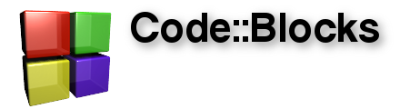
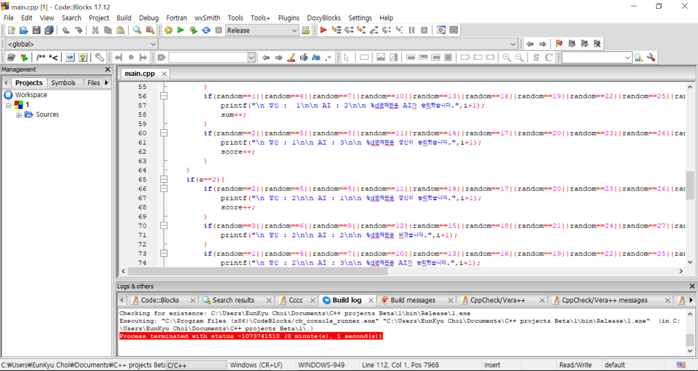
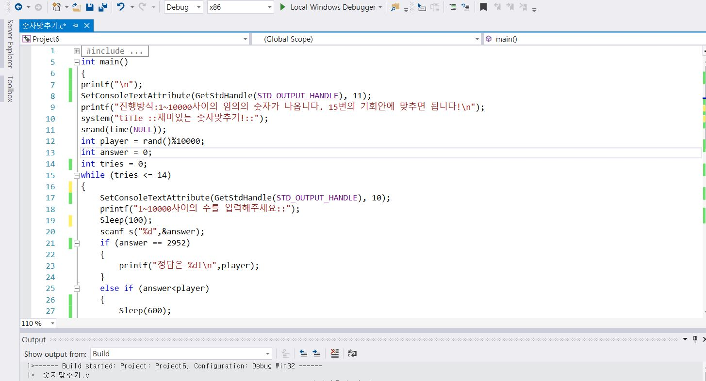

C++부서
사용하는 에디터: Code::Blocks(링크)

C++부는 컴퓨터 언어의 한 종류인 C++을 이용해서 다향한 활동을 추진중이다. C++을 이용해서 현재 우리가 친숙한 테트리스나 벽돌깨기등의 게임을 구현해내고 부원 개개인이 각자 자신만의 프로그램을 구현해는 수준까지 이르는 것을 목표로 삼고 있다. 부원은 모두 텍스트 기반의 프로그래밍을 배우고 있으며 추후에는 다같이 하나의 프로그램을 제작할 예정이다.
 
뒤로가기